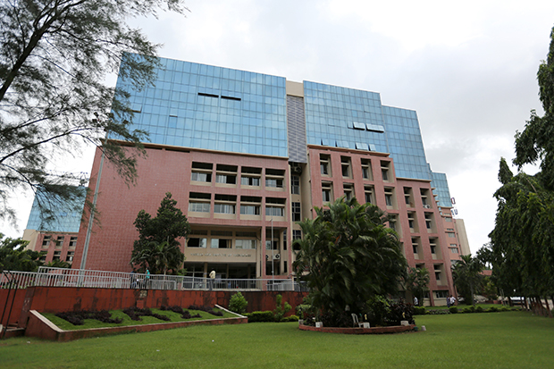

The first International Conference on Automation, Computing and Communication aims to bring together researchers in these fields and create a strong community which thrive on the frontier of technology.
The accepted papers will be published online through reputed publisher.
Ramrao Adik Institute of Technology (RAIT), established in 1983, is one of the oldes and premier institutes of Navi Mumbai. Located in the lush green campus of D.Y.Patil Deemed to be University, RAIT provides state-of-the-art amenities combined with the experienced teachers and amicable environment.
RAIT is a recognised research center of University of Mumbai offering PhD in Electronics Engineering, Computer Engineering, Instrumentation Engineering and Electronics and Telecommuincation Engineering. It is accredited by NAAC with "A" grade in 2016 for 5 years and holds 172 position in NIRF-2019. Departments of Electronics Engineering, Computer Engineering and Electronics & Telecommunication Engineering are re-accredited by National Board or Accreditation (NBA) in 2018 for 3 years.